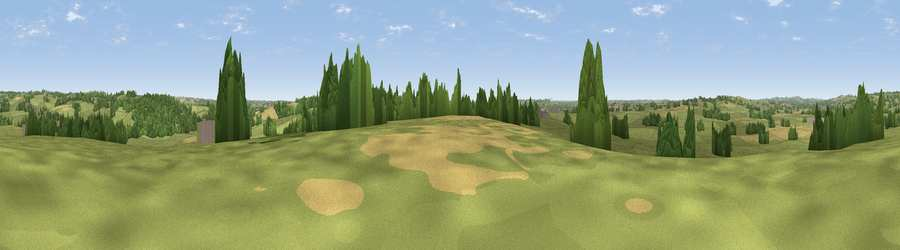

Viewpoint near Salt
#38445 in England · top 76% of its area beats it · near SaltThe view, rendered

A 360° render of this exact spot computed from the terrain model, tree cover and land cover — summer colours, afternoon light, calibrated against photographs of famous viewpoints. Real trees, hedges and buildings will differ in detail.
The panorama
Grey silhouette: terrain skyline in each direction (720 bearings, Earth curvature and refraction included). Dashed green: skyline with trees (+15 m) and buildings (+8 m) as obstacles. Blue strip: how far the ground is visible on each bearing.
Where the view opens
Wedge length = distance to the farthest visible ground on that bearing (vegetation-aware). Rings at 10, 25 and 50 km.
What fills the view
70% grassland · 16% woodland · 11% cropland · 2% built-up
Angular shares of the visible panorama (visual magnitude), not map area. Landscape diversity 0.38 (0–1 Shannon).
Key numbers
More beautiful places nearby
The staircase of upgrades: each row has a higher view potential than everything closer. Driving times are estimates from straight-line distance, calibrated against real road routing — check an actual route before setting out.
| Place | Direction | Drive | Score |
|---|---|---|---|
| Viewpoint near Salt | NNE · 2 km | ~6 min | 37.0 |
| Upper Park | NE · 3 km | ~6 min | 45.4 |
| Viewpoint near Hopton | S · 3 km | ~7 min | 49.7 |
| Peasley Bank | WNW · 5 km | ~10 min | 57.2 |
| Stafford Castle | SW · 7 km | ~15 min | 60.6 |
| Viewpoint near Beech | NW · 14 km | ~26 min | 62.1 |
| Viewpoint near Beech | NW · 14 km | ~26 min | 63.7 |
| Viewpoint near Newport | WSW · 22 km | ~36 min | 66.4 |
52.84924, -2.08645 · source: screening · position refined by local search. Computed location — check access rights before visiting.